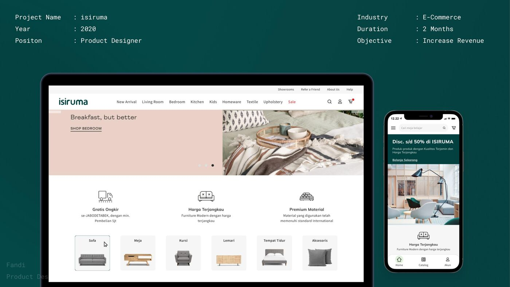
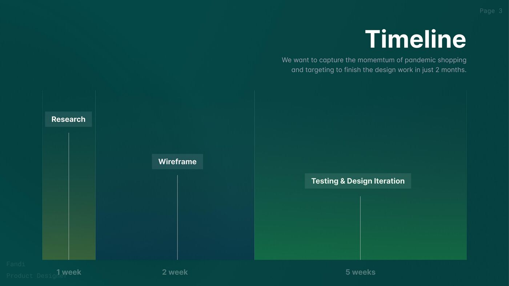
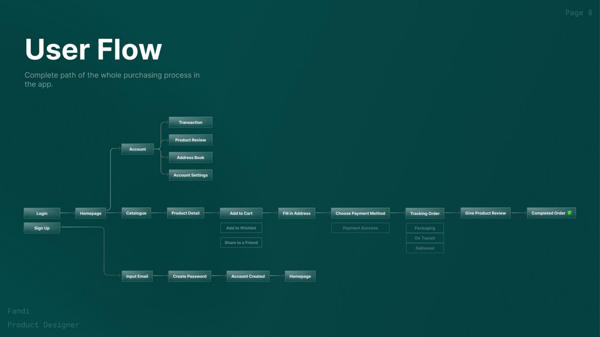
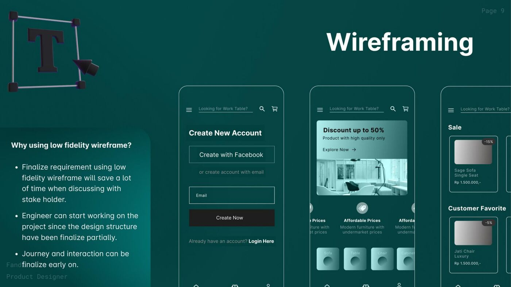
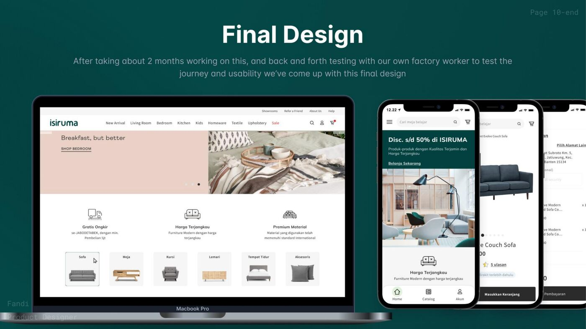

isiruma is an Indonesian furniture brand that wanted to move from showroom-only sales to a full online e-commerce experience. The timing was 2020: pandemic lockdowns had shifted shopping behavior online almost overnight, and the team wanted to capture that momentum before it faded.
The constraint was speed. We had 2 months to research, design, and ship a web-based marketplace and companion mobile app. I led the design effort and managed a cross-functional team of photographers, 3D artists, and developers.

I started by mapping the complete purchasing flow: from landing on the homepage through product browsing, product detail, cart, checkout, payment, and order tracking. Every branch and edge case was documented before we touched any UI.

The first week was research and competitor analysis. Weeks 2-3 were wireframes and flow validation. Weeks 3-8 were UI design, usability testing, and iterating based on findings. We ran testing cycles throughout, not just at the end.
The final output was a responsive web marketplace and a mobile app, both sharing the same design language. The web experience prioritized large product photography (furniture is a visual purchase), clear category navigation, and trust signals like free shipping, material quality guarantees, and competitive pricing.
The mobile app focused on browsing and quick reorders, with a simplified navigation structure (Home, Catalog, Account) that kept the experience lightweight.


After launch, I also redesigned the social media ad visuals and CTAs for isiruma's paid campaigns. The new creatives improved click-through rates by 35%, directly feeding the top of the funnel for the new e-commerce platform.